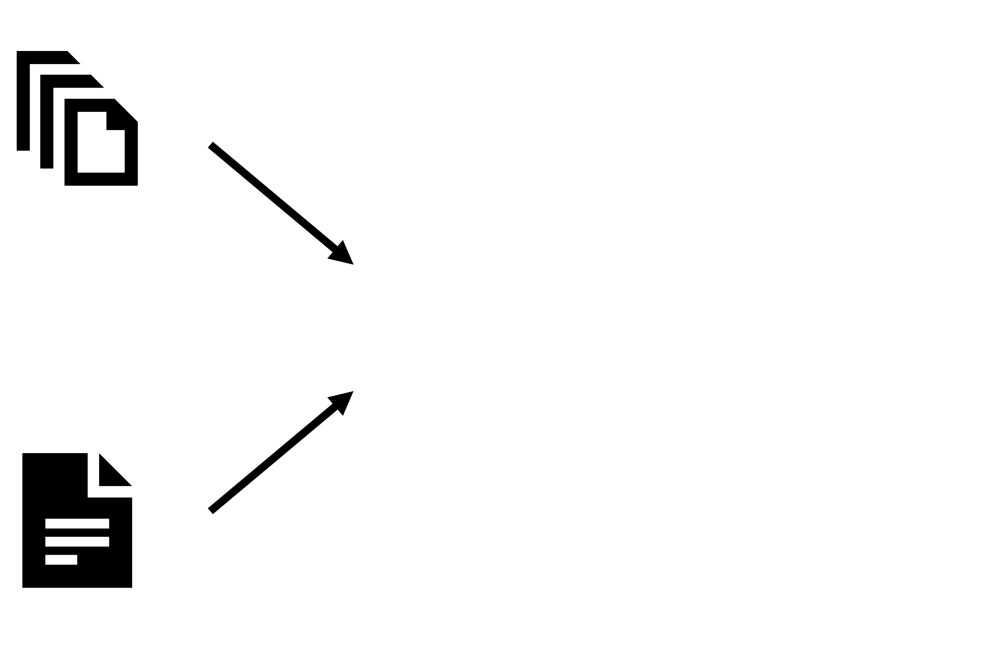
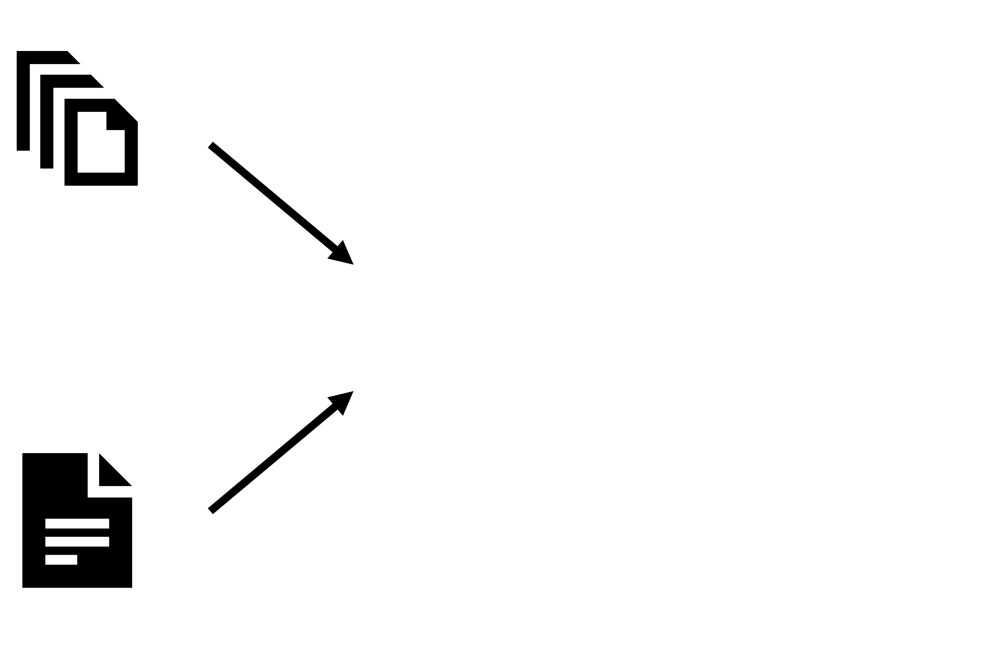

- so many formats...
- DAISY 2.02
- DAISY 3
- EPUB 2
- EPUB 3
- HTML

- Braille
- OOXML
- ODT
Romain Deltour
DAISY Annual General Meeting – June 12th 2013
An open-source, cross-platform framework for the automated production and maintenance of accessible content, efficiently and economically
 
